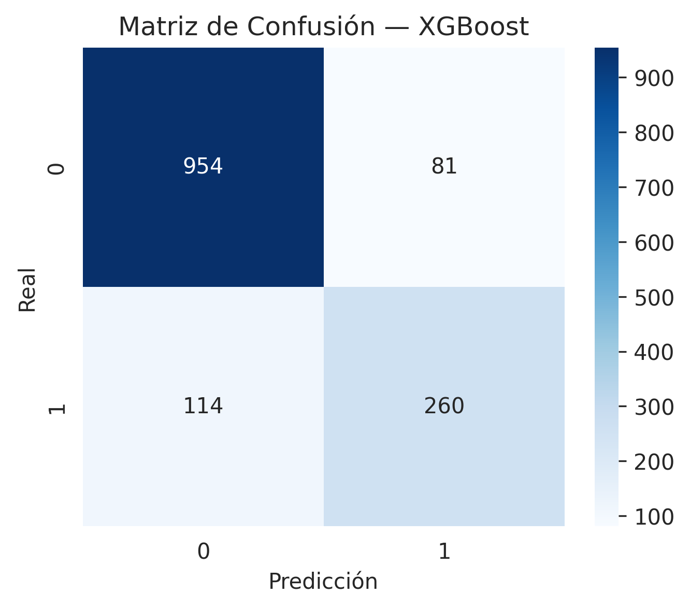
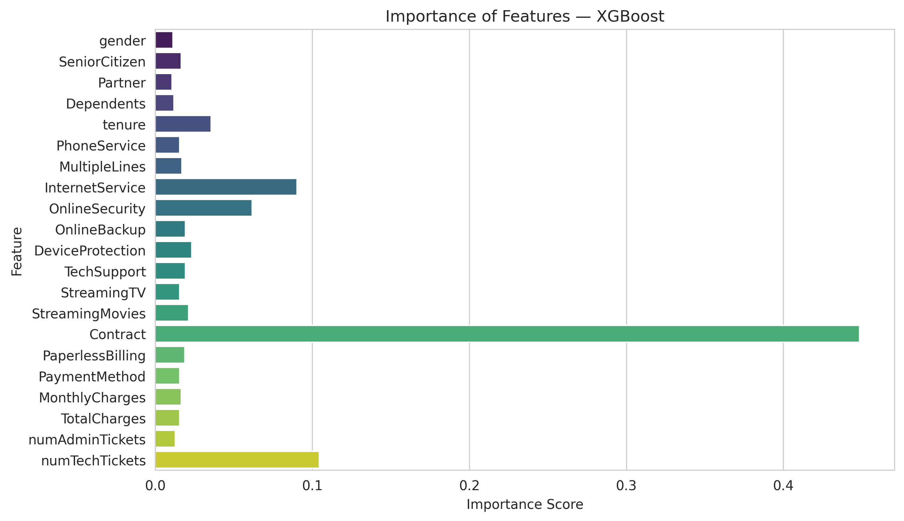

1. Descripción General
Este dashboard presenta los resultados del análisis de churn utilizando el dataset IBM Telco Customer Churn, implementando flujos completos de:
- Preparación de datos
- EDA (Análisis Exploratorio)
- Comparación de modelos (Random Forest vs XGBoost)
- Visualización de métricas científicas
- Predicción interactiva con el modelo final
2. Métricas del Modelo Final (XGBoost)
Accuracy
0.82
Precision
0.79
Recall
0.84
F1-Score
0.81
AUC-ROC
0.88
3. Visualizaciones Científicas
📌 Matriz de Confusión
📌 Curva ROC

📌 Importancia de Variables
4. Predicción Interactiva
Introduce las características del cliente para predecir su probabilidad de abandono utilizando el modelo XGBoost entrenado.